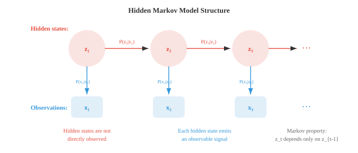

贝叶斯方法与序列模型¶
一句话总结：贝叶斯方法把先验信念和观测数据结合起来，给模型参数一个后验分布，从而支撑起 MLE、MAP、HMM、EM 等一整套现代 ML 技术。
贝叶斯方法把先验信念和观测到的数据结合起来，得到模型参数的后验分布。 本节涵盖极大似然估计、MAP 估计、共轭先验、贝叶斯推断、隐马尔可夫模型以及 EM 算法，这些技术支撑着垃圾邮件过滤器、语言模型和带不确定性的 ML.
-
到目前为止，我们讲了各种分布，也讲了怎么算概率。 现在来啃 ML 里最核心的一个问题：给定观测数据，怎么给模型找到最好的参数?
-
极大似然估计 (Maximum Likelihood Estimation, MLE) 直接回答这个问题：挑一组参数值，让观测到的数据最有可能出现。
-
形式化一点：给定数据 \(D = \{x_1, x_2, \ldots, x_n\}\) 与一个带参数 \(\theta\) 的模型，似然函数 (likelihood function) 定义为:
- 这里的连乘假设各个数据点是独立同分布 (i.i.d.) 的。 MLE 估计就是:
- 实操中我们优化的是 对数似然 (log-likelihood)，因为对数能把连乘变成连加，还能防止数值下溢:
-
由于 \(\log\) 单调递增，让 \(\ell(\theta)\) 取最大的那个 \(\theta\)，也一定让 \(L(\theta)\) 取最大。
-
抛硬币例子：抛 10 次得到 7 次正面。 硬币的偏差 \(p\) (正面概率) 的 MLE 估计是多少?
-
每次抛都是 Bernoulli(\(p\))，所以 10 次里出 7 次正面的似然是:
-
取对数后求导：\(\frac{d\ell}{dp} = \frac{7}{p} - \frac{3}{1-p} = 0\)，解得 \(\hat{p}_{\text{MLE}} = 7/10 = 0.7\).
-
MLE 直观又简单。 10 次抛出 7 个正面，最可能的偏差就是 0.7. 但注意个问题：如果 10 次全是正面，MLE 给出 \(\hat{p} = 1\)，意思是这枚硬币永远正面朝上。 只看 10 次观测就下这结论，有点过于自信了。
-
最大后验估计 (Maximum A Posteriori, MAP) 通过引入先验信念修正了这一点。 MAP 不再只最大化似然，而是最大化后验:
-
我们把分母里的 \(P(D)\) 丢掉了，因为它不依赖 \(\theta\)，不影响 argmax.
-
先验 \(P(\theta)\) 编码了看到数据之前，我们对 \(\theta\) 的信念。 假如给硬币偏差用一个 Beta(2, 2) 先验 (表达"硬币大致公平"的轻微信念), MAP 估计就不再是简单的正面比例了，它会被拉向 0.5.

- 用 Beta(\(\alpha\), \(\beta\)) 作先验，观测到 \(h\) 次正面 \(t\) 次反面，后验就是 Beta(\(\alpha + h\), \(\beta + t\))，对应的 MAP 估计为:
-
代入我们的例子，Beta(2,2) 先验，7 正 3 反：\(\hat{p}_{\text{MAP}} = \frac{2 + 7 - 1}{2 + 2 + 10 - 2} = \frac{8}{12} = 0.667\).
-
注意 MAP 估计 (0.667) 相比 MLE (0.7) 被拉向了 0.5. 先验起到了正则化的作用。 在 ML 里，L2 正则化 (权重衰减) 恰好等价于给权重加了个高斯先验的 MAP 估计。
-
完整的贝叶斯推断 (full Bayesian inference) 比 MAP 更进一步。 它不去找一个"最好"的 \(\theta\)，而是保留整个后验分布 \(P(\theta | D)\). 这样你不只得到一个点估计，还得到了对不确定性的度量。
-
对上面那枚硬币，Beta(2,2) 先验加 7 正 3 反，完整后验就是 Beta(9, 5). 这个分布的均值是 \(9/14 \approx 0.643\)，而它的展宽告诉我们有多确信。 数据越多，后验越窄。
-
三种方法构成一个谱系:
- MLE：无先验，只看数据。 快，但小数据下容易过拟合。
- MAP：带先验的点估计，更鲁棒。
- 完整贝叶斯：保留整个后验分布，信息最全，但计算代价常常很高。
-
马尔可夫链 (Markov chain) 建模的是这样一类序列：下一时刻的状态只取决于当前状态，与更早的历史无关。 这种"无记忆性"叫做 马尔可夫性质 (Markov property):
-
想象天气。 明天的天气取决于今天的天气，但不取决于上周的天气 (这是个简化，但意外地好用).
-
一个马尔可夫链有一个有限的 状态 (states) 集合和一个 转移矩阵 (transition matrix) \(T\)，其中 \(T_{ij}\) 表示从状态 \(i\) 走到状态 \(j\) 的概率。 每一行之和为 1.

- 对上面这个天气例子，转移矩阵是:
-
如果今天下雨 (状态向量 \(\mathbf{s}_0 = [1, 0, 0]\))，明天天气的概率分布就是 \(\mathbf{s}_1 = \mathbf{s}_0 T = [0.3, 0.4, 0.3]\). 后天则是 \(\mathbf{s}_2 = \mathbf{s}_0 T^2\). 用的正是第 1 章的矩阵乘法。
-
许多马尔可夫链会收敛到一个 平稳分布 (stationary distribution) \(\pi\)，满足 \(\pi T = \pi\). 无论从哪里出发，走足够多步后，链都会落到 \(\pi\). 这个性质是 MCMC (Markov Chain Monte Carlo，马尔可夫链蒙特卡罗) 的基石，MCMC 是贝叶斯 ML 里被广泛使用的采样技术。
-
隐马尔可夫模型 (Hidden Markov Model, HMM) 在马尔可夫链的基础上加了一层"间接性"：真正的状态是隐藏的 (不可观测的)，每一步隐藏状态发射出一个可观测的信号。

-
一个 HMM 由三部分组成:
- 转移概率 (transition probabilities) \(P(z_t | z_{t-1})\)：隐藏状态如何演化 (即那条马尔可夫链)
- 发射概率 (emission probabilities) \(P(x_t | z_t)\)：每个隐藏状态输出什么样的可观测信号
- 初始分布 (initial distribution) \(P(z_1)\)：起始隐藏状态的概率
-
雨伞例子：假设你看不到天气本身，但能看到朋友有没有带伞。 隐藏状态是 {下雨，晴天}，观测是 {带伞，没带伞}.
-
转移概率：\(P(\text{下雨}|\text{下雨}) = 0.7\), \(P(\text{晴天}|\text{下雨}) = 0.3\), \(P(\text{下雨}|\text{晴天}) = 0.4\), \(P(\text{晴天}|\text{晴天}) = 0.6\).
-
发射概率：\(P(\text{带伞}|\text{下雨}) = 0.9\), \(P(\text{没带伞}|\text{下雨}) = 0.1\), \(P(\text{带伞}|\text{晴天}) = 0.2\), \(P(\text{没带伞}|\text{晴天}) = 0.8\).
-
HMM 的三个核心问题:
- 解码 (decoding)：给定观测，最可能的隐藏状态序列是什么？由 维特比算法 (Viterbi algorithm) 解决。
- 评估 (evaluation)：一段观测序列出现的概率是多少？由 前向算法 (Forward algorithm) 解决。
- 学习 (learning)：给定观测，最佳的模型参数是什么？由 Baum-Welch 算法 解决 (它是期望最大化的一个实例).
-
维特比走一遍：假设你观察到 [带伞，带伞，没带伞]，想找最可能的天气序列。
-
从初始概率开始。 假设 \(P(R) = 0.5\), \(P(S) = 0.5\).
-
第 1 天 (观测到带伞):
- \(V_1(R) = P(R) \cdot P(U|R) = 0.5 \times 0.9 = 0.45\)
- \(V_1(S) = P(S) \cdot P(U|S) = 0.5 \times 0.2 = 0.10\)
-
第 2 天 (观测到带伞):
- \(V_2(R) = \max(V_1(R) \cdot P(R|R), V_1(S) \cdot P(R|S)) \cdot P(U|R)\)
- \(= \max(0.45 \times 0.7, 0.10 \times 0.4) \times 0.9 = \max(0.315, 0.04) \times 0.9 = 0.2835\)
- \(V_2(S) = \max(V_1(R) \cdot P(S|R), V_1(S) \cdot P(S|S)) \cdot P(U|S)\)
- \(= \max(0.45 \times 0.3, 0.10 \times 0.6) \times 0.2 = \max(0.135, 0.06) \times 0.2 = 0.027\)
-
第 3 天 (观测到没带伞):
- \(V_3(R) = \max(0.2835 \times 0.7, 0.027 \times 0.4) \times 0.1 = 0.1985 \times 0.1 = 0.01985\)
- \(V_3(S) = \max(0.2835 \times 0.3, 0.027 \times 0.6) \times 0.8 = 0.08505 \times 0.8 = 0.06804\)
-
第 3 天的最大值在 Sunny (晴天). 回溯：第 3 天 = 晴天 (由 R 转来)，第 2 天 = 下雨 (由 R 转来)，第 1 天 = 下雨。 最可能的序列是：下雨，下雨，晴天.
-
前向-后向算法 (Forward-Backward algorithm) 计算的是：给定整段观测序列，在每个时间步处于每个隐藏状态的概率。 前向过程算 \(P(z_t, x_{1:t})\)，后向过程算 \(P(x_{t+1:T} | z_t)\). 两者相乘就得到平滑后的状态概率。
-
Baum-Welch 算法 是在隐藏状态未被观测的情况下，从数据学习 HMM 参数。 它是一种期望最大化 (Expectation-Maximisation, EM) 算法：E 步用前向-后向估计"是哪些隐藏状态生成了这些观测", M 步用估计值更新转移概率和发射概率。
-
HMM 历史上曾在语音识别 (隐藏音素状态发射声学信号) 和生物信息学 (隐藏基因状态发射 DNA 碱基对) 中占主导地位。 深度学习虽然在这些领域大幅取代了 HMM，但"隐藏状态、发射、序列推断"这些思想依旧是序列模型的核心。
-
条件随机场 (Conditional Random Field, CRF) 通过去掉发射的独立性假设改进了 HMM. 在 HMM 里，\(t\) 时刻的观测只依赖于 \(t\) 时刻的隐藏状态。 CRF 允许 \(t\) 位置的标签依赖于整个输入序列。
-
线性链 CRF 建模的是：给定输入序列 \(\mathbf{x}\)，标签序列 \(\mathbf{y}\) 的条件概率:
-
这里 \(f_k\) 是特征函数 (可以看输入的任意部分), \(\lambda_k\) 是学到的权重，\(Z(\mathbf{x})\) 是归一化常数。
-
CRF 是判别式模型 (直接建模 \(P(\mathbf{y}|\mathbf{x})\))，而 HMM 是生成式模型 (建模 \(P(\mathbf{x}, \mathbf{y})\)). 这个区分和逻辑回归 (判别式) vs 朴素贝叶斯 (生成式) 是完全一样的。
-
在现代 NLP 里，CRF 层常被加在神经网络之上 (双向长短期记忆网络 (Bidirectional Long Short-Term Memory, BiLSTM)-CRF、BERT-CRF)，用于命名实体识别 (Named Entity Recognition, NER)、词性标注 (Part-of-Speech, POS) 这类需要捕捉标签依赖的任务。
编程任务 (用 CoLab 或 notebook)¶
-
为抛硬币实验实现 MLE 和 MAP. 观察 MAP 估计如何随不同先验与数据量变化。
import jax.numpy as jnp import matplotlib.pyplot as plt # 数据: 观测到的抛硬币结果 heads, tails = 7, 3 # MLE p_mle = heads / (heads + tails) print(f"MLE: {p_mle:.4f}") # 带 Beta 先验的 MAP for alpha, beta in [(1,1), (2,2), (5,5), (10,10)]: p_map = (alpha + heads - 1) / (alpha + beta + heads + tails - 2) print(f"MAP (Beta({alpha},{beta})): {p_map:.4f}") # 可视化 Beta(2,2) 先验下的后验 theta = jnp.linspace(0.01, 0.99, 200) # 后验为 Beta(alpha+heads, beta+tails) a_post, b_post = 2 + heads, 2 + tails posterior = theta**(a_post-1) * (1-theta)**(b_post-1) posterior = posterior / jnp.trapezoid(posterior, theta) plt.figure(figsize=(8, 4)) plt.plot(theta, posterior, color="#e74c3c", linewidth=2, label=f"Posterior Beta({a_post},{b_post})") plt.axvline(p_mle, color="#3498db", linestyle="--", label=f"MLE = {p_mle:.2f}") plt.axvline((a_post-1)/(a_post+b_post-2), color="#e74c3c", linestyle="--", label=f"MAP = {(a_post-1)/(a_post+b_post-2):.3f}") plt.xlabel("θ (coin bias)") plt.ylabel("Density") plt.title("Posterior distribution after 7H, 3T with Beta(2,2) prior") plt.legend() plt.grid(alpha=0.3) plt.show() -
为天气模型搭一个马尔可夫链并模拟它。 分别通过模拟和求解 \(\pi T = \pi\) 得到平稳分布。
import jax import jax.numpy as jnp # 转移矩阵: R, S, C T = jnp.array([ [0.3, 0.4, 0.3], [0.2, 0.5, 0.3], [0.4, 0.3, 0.3] ]) states = ["Rainy", "Sunny", "Cloudy"] # 模拟 100,000 步 key = jax.random.PRNGKey(42) n_steps = 100_000 state = 0 # 从下雨开始 counts = jnp.zeros(3) for i in range(n_steps): key, subkey = jax.random.split(key) state = jax.random.choice(subkey, 3, p=T[state]) counts = counts.at[state].add(1) sim_stationary = counts / n_steps print("Simulated stationary distribution:") for s, p in zip(states, sim_stationary): print(f" {s}: {p:.4f}") # 解析法: 找特征值为 1 的左特征向量 eigenvalues, eigenvectors = jnp.linalg.eig(T.T) idx = jnp.argmin(jnp.abs(eigenvalues - 1.0)) pi = jnp.real(eigenvectors[:, idx]) pi = pi / pi.sum() print("\nAnalytical stationary distribution:") for s, p in zip(states, pi): print(f" {s}: {p:.4f}") -
为雨伞 HMM 实现维特比算法，并解码一段观测序列。
import jax.numpy as jnp # HMM 参数 states = ["Rainy", "Sunny"] obs_names = ["Umbrella", "No umbrella"] trans = jnp.array([[0.7, 0.3], # R->R, R->S [0.4, 0.6]]) # S->R, S->S emit = jnp.array([[0.9, 0.1], # R->U, R->noU [0.2, 0.8]]) # S->U, S->noU init = jnp.array([0.5, 0.5]) # 观测: U=0, noU=1 observations = [0, 0, 1] # 带伞, 带伞, 没带伞 def viterbi(obs, init, trans, emit): n_states = len(init) T = len(obs) V = jnp.zeros((T, n_states)) path = jnp.zeros((T, n_states), dtype=int) # 初始化 V = V.at[0].set(init * emit[:, obs[0]]) # 递推 for t in range(1, T): for j in range(n_states): probs = V[t-1] * trans[:, j] V = V.at[t, j].set(jnp.max(probs) * emit[j, obs[t]]) path = path.at[t, j].set(jnp.argmax(probs)) # 回溯 best = [int(jnp.argmax(V[-1]))] for t in range(T-1, 0, -1): best.insert(0, int(path[t, best[0]])) return best, V decoded, scores = viterbi(observations, init, trans, emit) print("Observations:", [obs_names[o] for o in observations]) print("Decoded: ", [states[s] for s in decoded]) -
可视化后验如何随观测到的硬币数增加而演化。 从 Beta(1,1) 先验 (均匀分布) 开始，每投一次就更新一次。
import jax import jax.numpy as jnp import matplotlib.pyplot as plt theta = jnp.linspace(0.01, 0.99, 300) key = jax.random.PRNGKey(7) # 真实偏差 = 0.65 flips = jax.random.bernoulli(key, p=0.65, shape=(50,)) plt.figure(figsize=(10, 5)) a, b = 1, 1 # Beta(1,1) = 均匀 for n_obs in [0, 1, 5, 10, 25, 50]: h = int(flips[:n_obs].sum()) t = n_obs - h a_post = a + h b_post = b + t y = theta**(a_post-1) * (1-theta)**(b_post-1) y = y / jnp.trapezoid(y, theta) plt.plot(theta, y, linewidth=2, label=f"n={n_obs} (h={h})") plt.axvline(0.65, color="black", linestyle=":", alpha=0.5, label="true p=0.65") plt.xlabel("θ") plt.ylabel("Density") plt.title("Bayesian updating: posterior narrows with more data") plt.legend() plt.grid(alpha=0.3) plt.show()
📌 本节要点¶
- 极大似然估计 (MLE)：挑参数让观测数据最有可能出现，数据少时容易过拟合。
- 对数似然：把连乘变连加，数值稳定，且不改变 argmax.
- 最大后验估计 (MAP)：在似然基础上乘先验，把估计拉向先验均值，相当于正则化。
- 共轭先验: Beta 之于 Bernoulli，后验形式与先验同族，更新只需改超参数。
- L2 与高斯先验等价：权重衰减本质就是给权重加高斯先验后的 MAP.
- 完整贝叶斯推断：保留整个后验分布，得到点估计 + 不确定性，代价是计算贵。
- 马尔可夫性质：未来只依赖当下，不依赖历史，转移矩阵刻画状态间概率。
- 平稳分布：满足 \(\pi T = \pi\)，是 MCMC 采样收敛的基础。
- HMM 三问：解码 (Viterbi)、评估 (Forward)、学习 (Baum-Welch，即 EM).
- CRF vs HMM：判别式对生成式，允许标签依赖整个输入序列，现代 NLP 常做序列标注的输出层。